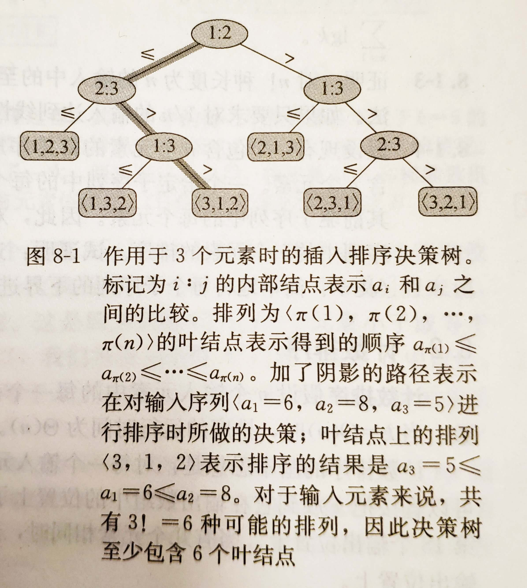
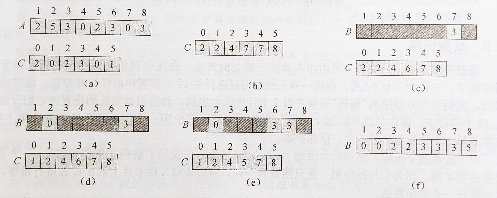
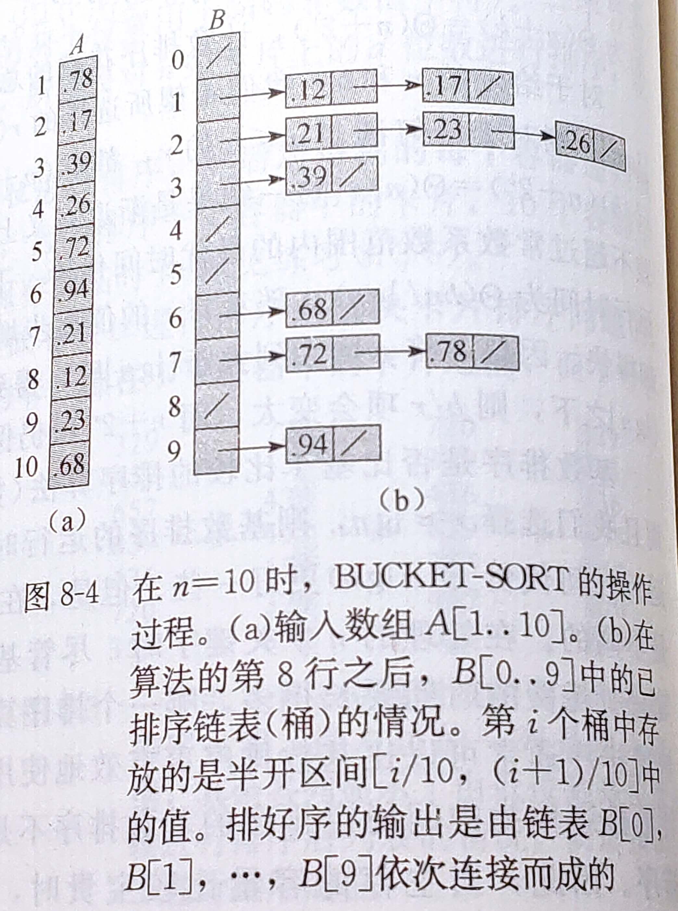

比较排序
在排序算法中，其实我们关注的最多的还是时间复杂度的问题，之前所提到的排序算法大部分时间复杂度都是\(O(n \lg n)\)。堆排序，归并排序，以及快速排序，事实上它们都是比较排序，即通过对元素进行比较来确定元素的相对次序。
之后我们会证明在最坏情况下所有的比较排序都需要做\(\Omega(n \lg n)\)次比较。
决策树模型
如果你了解过机器学习，那么肯定对决策树不陌生，决策树除了在机器学习领域作为一种常用的模型，在经典算法领域中对于证明一些问题也有很大的作用。
决策树是一颗二叉树1，它可以表示在给定输入规模情况下，某一特定排序算法对所有元素的比较操作。

排序算法的每一步执行，对应于决策树的每一条路径，因此排序算法的最终运行情况对应于决策树的叶节点。
排序算法的最终运行结果共有\(n!\)种可能(根据排列的定义)，因此叶节点个数也至少有\(n!\)个。考虑一颗高度为\(h\)，具有\(l\)个可达叶节点的决策树，它对应一个对\(n\)个元素所做的排序，一棵高为\(h\)的二叉树其叶结点个数不大于\(2^h\)，因此我们有： \[ n! \leq l \leq 2^h \] 两边取对数 \[ \lg(n!) \leq \lg(2^h) \\ \lg(n!) \leq h \] 接下来证明\(\lg(n!)\)的渐进上下界即可： \[ \lg(n!) \leq \lg(n^{n}) = n\lg n \\ \lg(n!) = \sum_{k=1}^{n}\lg k \geq n\lg n \] 最终可以得到： \[ h = \Omega(n\lg n) \] 决策树的高度决定了比较的次数，从而，我们证明了，比较算法在最差情况下，时间的下界为\(n\lg n\)。
线性时间排序
为了将时间从\(O(n\lg n)\)提升到\(O(n)\)，就必须要跳出比较排序的框架。
计数排序
计数排序是一种常见且简单的线性时间排序，它要求被排序数是在0到k之间的整数。
计数排序原理很简单，分配一个数组C[0..k]提供临时的存储空间，将C的所有位置的值初始化为0，要求被排序数组中最大的数不大于k。然后对数组进行遍历，假设当前遍历的数字为i，则C[i]的值加1。
遍历完成后，临时数组C[i]表示元素i的个数，之后把临时数组从前往后累加，此时C[i]表示在原数组中最后一个元素i的的位置。

1 | int* counting_sort(int* array, int k, int length) { |
计数排序是稳定的非原址排序算法，计数排序的稳定性很重要，因为接下来要介绍的基数排序常常把计数排序作为子过程，如果计数排序不稳定，基数排序就无法正常工作。
计数排序的时间复杂度为\(O(n+k)\)
基数排序
基数排序可以说是强化版的计数排序，基数排序可以用于更大的范围。
基数排序的基本思想很简单，按位从低到高对元素进行排序。以输入元素为[328, 467, 834, 562, 482]为例: - 首先对个位数进行排列，得到[562, 482, 834, 467, 328] - 再对十位数排序，得到[328, 834, 562, 467, 482] - 最后对百位排序，得到[328, 467, 482, 562, 834]
对每位数字进行排序的算法要求必须稳定，因此计数排序作为线性时间排序算法常常被用作基数排序的子过程。
基数排序适用于位数差别不大的整数，例如身份证号。如果把计数排序排序作为子过程，记\(d\)为输入元素的最高位数，那么基数排序的时间复杂度为\(O(d(n+k))\)。
桶排序
以上的两种算法都针对于整数的排序，而桶排序则不一样，桶排序假设输入由一个随机过程产生，该过程将元素均匀独立地分布在[0,1)区间上。
桶排序将[0,1)区间划分为n个相同的大小的子区间，或称为桶。然后将n个数分别输入桶中，桶的结构类似于链接法实现的哈希表。

总结
| 排序算法 | 计数排序 | 基数排序 | 桶排序 |
|---|---|---|---|
| 适用范围 | 0到k的整数 | 长度不超过d的整数 | [0,1)内的有理数 |
| 时间复杂度 | \(O(n+k)\) | \(O(d(n+k))\) | \(O(n)\) |
算法导论第三版中文版中，此处写为完全二叉树，但决策树并不一定是完全二叉树。英文原著中此处为"full binary tree"，需要注意此处的"full binary tree"不是国内教材中的“满二叉树”，而是指满足“一个节点要么是叶子节点，要么有2个子节点”的二叉树，而国内教材中的“满二叉树”，对应英文为"perfect binary tree"。↩